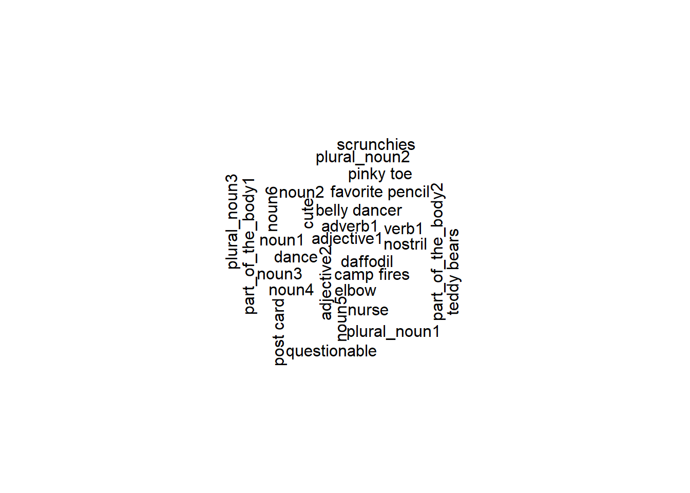

Talk like a Pirate!
DRAFT: March 27, 2023
About example 3
This example expands on the previous example1. Here you will learn:
- Call .qmd from .r script
- Play around with the YAML
- Apply table and figure cross referencing
- Apply citation cross referencing
- Use citation style library (CSL)
- Use bibtex file (contains citations)
MadLib Responses
1: By: Testing: 1, 2, 3!
Ye can always pretend to be a bloodthirsty noun1, threatening everyone by waving yer adjective1 sword in the air, but until ye learn to verb1 like a pirate, ye’ll never be accepted as an authentic noun2. So here’s what ye do: Cleverly work into yer daily conversations adjective2 pirate phrases such as “Ahoy there, plural_noun1,” “Avast, ye plural_noun2,” and “Shiver me plural_noun3.” Remember to drop all yer gs when ye say such words as sailin’, spittin’, and fightin’. This will give ye a part_of_the_body1 start to bein’ recognized as a swashbucklin’ noun3. Once ye have the lingo down pat, it helps to wear a three-cornered noun4 on yer head, stash a noun5 in yer pants, and keep a noun6 perched atop yer part_of_the_body2. Aye, now yer be a real pirate!
2: By: Em
Ye can always pretend to be a bloodthirsty nurse, threatening everyone by waving yer cute sword in the air, but until ye learn to dance like a pirate, ye’ll never be accepted as an authentic belly dancer. So here’s what ye do: Cleverly work into yer daily conversations questionable pirate phrases such as “Ahoy there, teddy bears,” “Avast, ye scrunchies,” and “Shiver me camp fires.” Remember to drop all yer gs when ye say such words as sailin’, spittin’, and fightin’. This will give ye an elbow start to bein’ recognized as a swashbucklin’ pinky toe. Once ye have the lingo down pat, it helps to wear a three-cornered post card on yer head, stash a favorite pencil in yer pants, and keep a daffodil perched atop yer nostril. Aye, now yer be a real pirate!
Methods
The original MadLib prompt was reformatted into a .qmd (Figure 1).

Results: What kinds of responces did users submit?
Collectively, the google form had 2 responses (Table 1).
| Timestamp | Author | noun1 | adjective1 | verb1 | adverb1 | noun2 | adjective2 | plural_noun1 | plural_noun2 | plural_noun3 | part_of_the_body1 | noun3 | noun4 | noun5 | noun6 | part_of_the_body2 |
|---|---|---|---|---|---|---|---|---|---|---|---|---|---|---|---|---|
| 3/25/2023 23:49:29 | Testing: 1, 2, 3! | noun1 | adjective1 | verb1 | adverb1 | noun2 | adjective2 | plural_noun1 | plural_noun2 | plural_noun3 | part_of_the_body1 | noun3 | noun4 | noun5 | noun6 | part_of_the_body2 |
| 3/26/2023 11:54:38 | Em | nurse | cute | dance | belly dancer | questionable | teddy bears | scrunchies | camp fires | elbow | pinky toe | post card | favorite pencil | daffodil | nostril |
In the below word cloud, we see if there were any common responses across enteries (Figure 2).

Black-Scholes (Equation 1) is a mathematical model that seeks to explain the behavior of financial derivatives:
\[ \frac{\partial \mathrm C}{ \partial \mathrm t } + \frac{1}{2}\sigma^{2} \mathrm S^{2} \frac{\partial^{2} \mathrm C}{\partial \mathrm C^2} + \mathrm r \mathrm S \frac{\partial \mathrm C}{\partial \mathrm S}\ = \mathrm r \mathrm C \tag{1}\]
Works Cited
Footnotes
MadLib from: https://www.pinterest.com/pin/sample-best-of-mad-libs–845550898799970448/↩︎